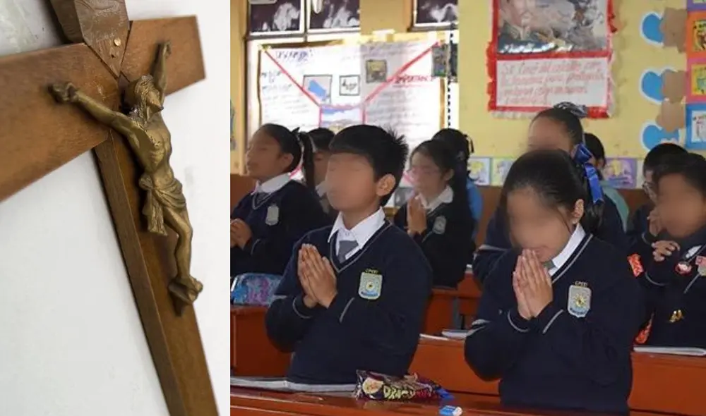

Can a student be exempted from religious education in Peru?
Legal framework of Law No. 29635, rights of families and students, procedures for public and private schools, and a formal request template.

Yes. In Peru, students have the right to be exempted from the Religious Education course on grounds of conscience or due to their religious convictions. This right is recognized by Law No. 29635, the Religious Freedom Law, and applies to educational institutions at all levels and in all modalities.
This means that a family can request that their son or daughter not receive religious instruction at school, even if the institution is a private or religious school. It is not necessary to belong to another religion to exercise this right: individuals who do not profess any religious belief may also do so.
However, many families are unaware of this possibility or do not know how to exercise it. In other cases, schools fail to properly inform families about the procedure or create obstacles for those who file a request.
In this article, we explain what Peruvian law establishes, who can request the exemption, and what steps should be followed to exercise this right.
What does Peruvian law say about the exemption from religious education?
Article 8 of Law No. 29635, the Religious Freedom Law, expressly recognizes students' right to be exempted from religion courses on grounds of conscience or due to their religious convictions.
The law establishes that educational institutions, at all levels and in all modalities, must respect this right and that the exemption cannot affect the student's grade point average.
In the case of minors, the exemption proceeds when requested by the parents or the person exercising legal guardianship.
This right is also included in Article 42 of the Regulations of the General Education Law, enacted through Supreme Decree No. 011-2012-ED. It establishes that parents, guardians, or students of legal age may request exemption from the Religious Education curricular area. The decision must be recorded and kept confidential by the educational institution.
Therefore, this is not a concession granted by the school, nor a decision that depends on the discretion of school authorities. It is a right recognized by national law.
Who can request the exemption?
The exemption can be requested on grounds of conscience or due to the person's religious convictions. It is not reserved for those who profess a religion different from the one taught at the school.
The following individuals may exercise this right:
- Parents or guardians: may request the exemption for their minor children.
- Students of legal age: may file their own request directly.
- Non-religious families: may request the exemption when their convictions or their absence of religious beliefs are incompatible with receiving confessional instruction.
It is important to clarify that it is not necessary to demonstrate membership in another religion. This right also protects atheists, agnostics, and those who do not identify with any religious denomination.
The Regulations of the Religious Freedom Law also establish that no one can be compelled to declare their religious convictions. Therefore, the educational institution should not require explanations about a family's personal life, beliefs, or intimate reasons beyond what is necessary to process the request.
Can I exempt my child if they attend a religious or Catholic school?
Yes. Article 8 of Law No. 29635 recognizes the right to exemption in educational institutions at all levels and in all modalities, without establishing an exception for religious schools.
Therefore, the fact that a school is Catholic or belongs to another religious denomination does not eliminate students' right to request exemption from the Religious Education area.
Freedom of conscience protects both those who wish to receive religious instruction and those who prefer not to. Choosing a particular educational institution should not be interpreted as an automatic waiver of this right.
How to request the exemption from religious education?
For Basic Education schools, both public and private, the procedure is regulated by the Ministry of Education's provisions on the enrollment process.
Ministerial Resolution No. 010-2026-MINEDU, approved in January 2026, establishes that the student or their legal representative may request exemption from the competencies of the Religious Education area at the time of enrollment.
These are the steps we recommend following:
1. Prepare a request addressed to the school principal.
The letter should clearly state that exemption from the Religious Education curricular area is being requested. If the student is a minor, the request is filed by a parent or legal representative. If the student is of legal age, they may file it directly.
2. Submit the request during the enrollment process.
Current regulations allow filing the request in person or online, depending on the means available at the educational institution.
3. Keep proof of submission.
If you deliver the letter in person, bring a copy for the school to acknowledge receipt. If you submit it through a platform or virtual document office, save the confirmation or registration number.
4. Verify that the exemption is properly recorded.
The principal of the educational institution authorizes the exemption and must record it in the Educational Institution Management Support Information System (SIAGIE).
The Ministry of Education's regulation includes a sample request form in Annex IV. This template is for reference only and is not mandatory, so families may use their own letter as long as it contains the corresponding request.
What should the exemption letter say?
The request does not need to be lengthy. What matters is that it identifies the student, indicates who is filing the request, and clearly states that exemption from the Religious Education area is being requested.
You may use the following template:
Exemption Request Template
To the Principal of [School Name]:
I, [Full name], identified with National ID No. [ID Number], in my capacity as the parent or legal representative of the student [Student's full name], hereby request exemption from the Religious Education curricular area, in accordance with Article 8 of Law No. 29635, the Religious Freedom Law, and the current provisions of the Ministry of Education.
This request is filed on grounds of conscience and in exercise of the right to freedom of conscience.
I kindly request that the corresponding exemption be duly recorded, in compliance with the regulations in effect.
Sincerely,
[Full name]
National ID: [ID Number]
Date and signature
In the case of students of legal age, the request must be filed and signed directly by the student themselves.
Does the exemption affect grades or the grade point average?
No. Law No. 29635 expressly establishes that the exemption must not affect the student's grade point average.
Furthermore, the Regulations of the General Education Law state that for students exempted from the Religious Education area, the grade point average is calculated considering only the remaining curricular areas.
The enrollment provisions approved by the Ministry of Education in 2026 also indicate that the school must offer other learning activities during the time allotted to the area whose competencies were exempted. These activities are not graded.
Consequently, the school cannot penalize the student's grades for exercising their right to the exemption.
What to do if the school refuses to accept the request?
If the school refuses to receive the letter, conditions the exemption on the family proving membership in another religion, or attempts to prevent the student from exercising this right, it is important to document what has occurred.
We recommend following these steps:
1. Submit the request through a channel that provides proof of receipt.
If the school refuses to accept the physical document, try submitting it through the school's virtual document office or its formal document reception channel. Keep any evidence of the refusal.
2. Request a written response.
Ask the principal to explain in writing the reasons for not accepting or processing the exemption. This will help document the issue and facilitate any subsequent complaint.
3. Contact the corresponding UGEL.
If the educational institution does not respect the right recognized by law, you may file a complaint with the Local Educational Management Unit (UGEL) in the jurisdiction where the school is located. You may also contact the Regional Education Directorate (DRE), as applicable.
In the case of private schools, families may document what occurred in the Complaints Book and consult Indecopi's assistance channels when they believe their rights as users of the educational service have been violated.
It is advisable to keep the request, the proof of receipt, communications with the school, and any documents related to the case.
Does the exemption also apply to university students?
Yes. Article 8 of Law No. 29635 recognizes the right to be exempted from religion courses at educational institutions of all levels and modalities. Therefore, its scope is not limited to primary and secondary schools.
However, the enrollment procedure approved by Ministerial Resolution No. 010-2026-MINEDU specifically regulates Basic Education. Higher education institutions must address this right in accordance with their applicable legal framework and their own regulations, without disregarding the protection recognized by the Religious Freedom Law.
Freedom of conscience is also exercised at school
Education should contribute to developing individuals who are capable of thinking, learning, and forming their own convictions. For this to be possible, it is necessary to respect the freedom of conscience of students and their families.
Religious instruction may have a place in the education of those who choose it, but no one should be compelled to receive confessional education against their convictions. Respect for diversity also means recognizing those who do not profess any religion.
The exemption from the Religious Education course is not a privilege or a special concession. It is a right recognized by Peruvian law and an expression of freedom of conscience.
At APERAT, we believe it is important for families to know about this right and to be able to exercise it without obstacles. That is why we developed Exonérate Perú, an initiative that offers information and tools to help parents and students process the exemption from the Religious Education area.
If you need guidance or want to learn about the steps to file your request, visit our initiative Exonérate Perú. There you will find information about the legal basis, recommendations for the process, and resources you can use free of charge.